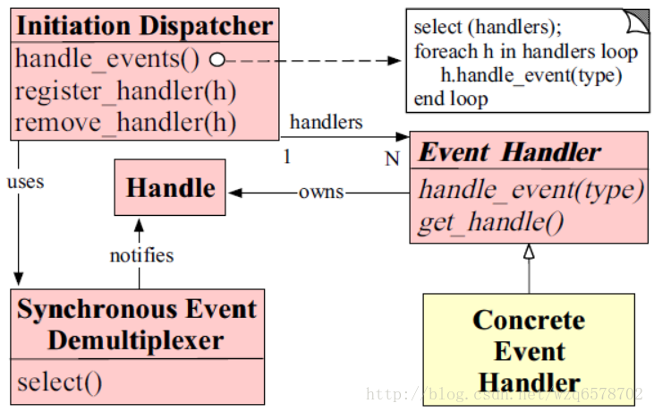
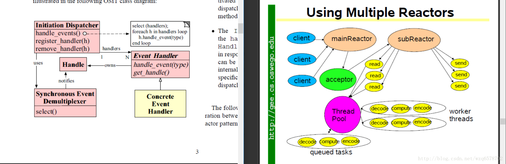

netty源码分析(九)Reactor模式与Netty组件对比及Acceptor组件的作用分析

Reactor模式的角色构成（Reactor模式一共有5种角色构成 ）：
1、Handle（句柄或是描述符）：本质上表示一种资源，是由操作系统提供的；该资源表示一个个的事件，比如说文件描述符，活是 针对网络编程中的Socket描述符，事件既可以来自外部，也可以来自内部，外部事件比如说客户端的连接请求，客户端发送过来数据等；内部事件比如说操作系统产生的定时器任务事件等。它本质就是一个文件描述符。Handle是事件产生的发源地。
2、Synchronous Event Demultiplexer(同步事件分离器)：它本身是一个系统调用，用于等待事件的发生（事件可能是一个，也可能是多个）。调用方在调用它的时候会被阻塞，一直阻塞到同步事件分离器上有事件产生为止。对于Linux来说，同步事件分离器指的就是常用的I/O多路复用机制，比如说select、poll、epoll等。在Java Nio领域中，同步事件分离器对应的组件就是selector；对应的阻塞方法就是select方法。
3、Event Handler（事件处理器）：本身由多个回调方法构成，这些回调方法构成了与 应用相关的对于某个事件的反馈机制。Netty 相比于NIO来说，在事件处理器这个角色上进行了一个升级，它为我们开发者提供了大量的回调方法，供我们在特定事件产生时实现相应的回调方法进行业务逻辑的处理。
4、Concrete Event Handler（具体事件处理器）：是事件处理器的实现。它本身实现了事件处理器所提供的各个回调方法，从而实现了特定业务的逻辑，它本质就是我们所编写的一个个的处理器实现。
5、Initiation Dispatcher（初始化分发器）：实际上就是Reactor角色，它本身定义了一些规范，这些规范用于控制事件的调度方式，同时又提供了应用进行事件处理器的注册，删除等设施。它本身是整个事件处理器的核心所在，Initiation Dispatcher会通过 同步事件分离器来等待事件的发生，一旦事件发生，Initiation Dispatcher首先会分离出每一个事件，然后调用事件处理器，最后调用相关的回调方法来处理这些事件。
这些组件是怎么串联在一起的呢？
首先Initiation Dispatcher（初始化分发器）启动的时候，会把所有相关的Event Handler（事件处理器，具体的是它的实现类Concrete Event Handler）注册到Initiation Dispatcher，当有相关事件发生的时候，就会根据事件的类型调用Event Handler的回调，Event Handler拥有Handle的引用，即事件处理器感兴趣的事件，注册完毕之后，Initiation Dispatcher会执行自己的内部循环，在循环内部会调用Synchronous Event Demultiplexer的select方法，当有外部请求过来的时候，select方法返回事件集合，之后Initiation Dispatcher遍历集合，拿到每一个事件，根据事件类型调用Event Handler 的.handle_event(type)方法，至此整个循环过程结束。
为了表述清楚。分为以下6个步骤：
当应用向Initiation Dispatcher注册具体的事件处理器时，应用会标示出该事件处理器希望Initiation Dispatcher在某个事件发生时向其通知的改事件，该事件与Handle关联。
2、Initiation Dispatcher会要求每个事件处理器向其传递内部的Handle。该Handle向操作系统标识了事件处理器。
3、当所有的事件处理器注册完毕后，应用会调用handle_events方法来启动Initiation Dispatcher的事件循环。这时，Initiation Dispatcher会将每个注册的事件管理器的Handle合并起来，并使用同步事件分离器等待事件的发生。比如说。TCP协议层会使用selecct同步事件分离器操作来等待客户端发送的数据到达连接的socket handle上。
4、当与某个事件源对应的Handle变为ready状态时（比如说，TCP socket变为等待状态时），同步事件分离器就会通知Initiation Dispatcher。
5、Initiation Dispatcher会触发事件处理器的回调方法，从而响应这个处于ready状态的Handle，当事件发生时，Initiation Dispatcher会将被事件源激活的Handle作为key来寻找并分发恰当的事件处理器回调。
6、Initiation Dispatcher回调事件处理器的handle_event回调方法来执行特定于应用的功能（开发者自己所编写的功能），从而响应这个事件。所发生的事件类型可以作为该方法参数并被该方法内部使用来执行额外的特定于服务的分离与分发。
下面我们结合netty的源码看一下这2张图：

Initiation Dispatcher对应右边图的mainReactor和subReactor，只是右边图把所谓的初始化分离器拆开，变成2个Reactor，中间用acceptor连接起来，右图，当我们服务端一个channel绑定一个端口的时候，就会生成一个Reactor，Reactor是连接netty的bossgroup和workgroup的桥梁，我们跟踪一下代码，我们从
1 | ChannelFuture channelFuture = serverBootstrap.bind(8899).sync(); |
这行代码往下走，最后我们到达ServerBootstrap的init方法：
1 | void init(Channel channel) throws Exception { |
我们进入ServerBootstrapAcceptor看看是怎么将bossgroup和workgroup连接在一起的：
主要的方法是channelRead
1 | public void channelRead(ChannelHandlerContext ctx, Object msg) { |